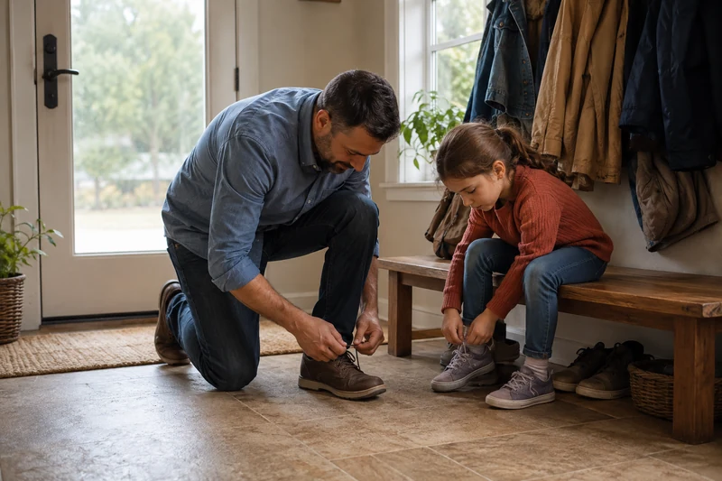
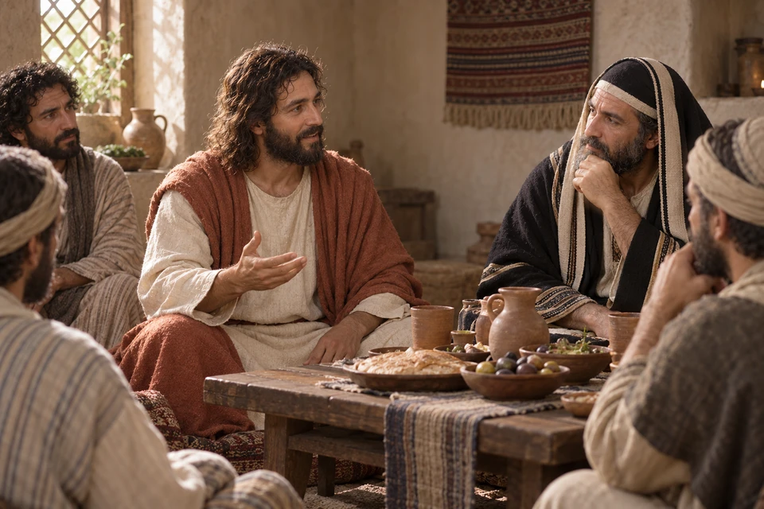
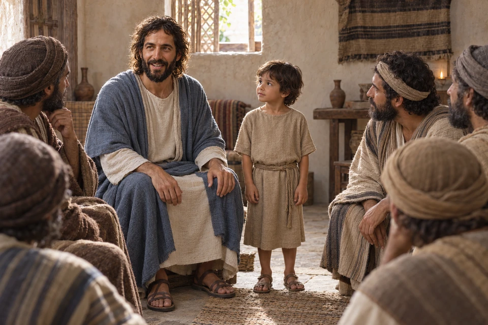
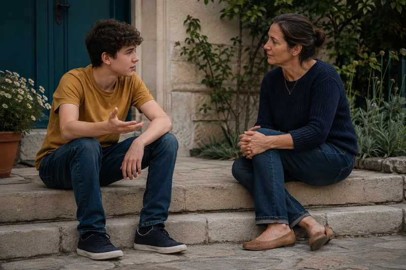

General conference video and text
Eternal Families
The Church of Jesus Christ of Latter-day Saints · April 2016
Latter-day Saints believe family is central to God’s plan because every person is a child of heavenly parents and because family relationships can become eternal through Jesus Christ and sacred covenants.
Watch and study

Explore and study
A father patiently helps his daughter tie her shoe. Small moments of gentleness can express the long-suffering and love that should guide family relationships.
In Eternal Families, President Henry B. Eyring connects the hope of family life with God to everyday service. Speaking to priesthood holders, he asks them to place their families and the families around them at the center of their concern. Near the end, he emphasizes the lasting value of small acts that help loved ones move toward eternal life.
General conference video and text
The Church of Jesus Christ of Latter-day Saints · April 2016
Watch or read with two questions in mind: What does he teach about covenants? How does he describe the way family members should treat one another? He draws on Doctrine and Covenants 121:41-43, emphasizing persuasion, patience, gentleness, and sincere love.
As a personal application, consider a small act of care that fits your circumstances: listening without interruption, offering an apology for your own mistake, or keeping a promise. Eternal family teaching can give those ordinary choices meaning. It does not let us determine the worth or ultimate future of someone else's household.
Latter-day Saint teaching begins with divine identity: human beings lived with heavenly parents before birth and are sons and daughters of God. Earthly family life is therefore connected to a larger eternal family and provides a setting for learning love, sacrifice, responsibility, forgiveness, and service.

A place at the table offers a moment of welcome. Explore belonging through ordinary acts of care.
Read “Make a place at the table” in Jesus Christ →Explore and study
Jesus looks around at those seated with Him and speaks of a family joined by doing the will of God. His words invite us to consider how faith can deepen our care for one another.
Church teaching gives high importance to marriage, parenting, fidelity, nurturing children, and building homes centered on Jesus Christ. The family is viewed not merely as a social convenience but as part of God’s design for mortal growth and eternal happiness.
Explore and study
A father came to Jesus in Cana while his son lay ill in Capernaum. He trusted the Savior’s word and began the journey home. Before he arrived, his servants met him with news that his son was living.
Latter-day Saints believe priesthood sealing ordinances performed in temples can unite husbands and wives, and parents and children, beyond death. These promises are connected to faithfulness to God and the covenants made in the temple. The doctrine is one reason temples and family history hold such a prominent place in Church life.
No family is perfect, and some relationships are unsafe or deeply wounded. The gospel does not require a person to pretend that abuse or serious harm is acceptable. The hope of eternal family life is centered on Jesus Christ’s power to redeem, heal, judge perfectly, and make right what cannot be fully repaired in mortality.

A resident explains what would help while others listen. Let the person receiving care help shape the response.
Read “Listening before offering help” in Jesus Christ in the Restoration and Today →Explore and study
Near the gate of Nain, Jesus saw a widow whose only son had died. He called the young man to arise and returned him to his mother. Luke tells the story through the Savior’s compassion for her and His power to give life.
If relationships can matter eternally, daily choices toward patience, loyalty, repentance, forgiveness, teaching, and service gain added significance. Latter-day Saints are encouraged to strengthen family relationships while also extending Christlike love to people in every family circumstance.
Explore and study
A father brought his suffering son to Jesus and spoke honestly about both belief and uncertainty. His plea, “help thou mine unbelief,” gives words to parents who love deeply while struggling to know what comes next.
If talk of eternal families brings up longing or unanswered questions, you are welcome to take your time. You do not owe anyone a public explanation of your family life. For more focused reading, see support through divorce or hope after the death of a child.
Family study can lead to a practical question: who needs care around me today? Mosiah 18:8-10 asks disciples to share burdens and offer comfort. That commitment can include a neighbor living alone, a parent needing a break, or someone whose relatives are far away.

Practical help gives care a place in ordinary life. Continue with the invitation to serve a neighbor.
Read “Give practical help” in Jesus Christ →You might offer an invitation with room to decline, ask how someone prefers to be included, or help with an ordinary task. Belonging is easier to experience when people are known by name and treated with consideration, without having to explain why their household looks different.

Explore and study
At a meal, Jesus asked His host to invite people who could not repay him. His teaching reaches beyond the circle of friends and relatives who can return a favor. A welcoming home can offer care freely.
Explore and study
A parent and teenager clear an older neighbor's path together. Their care extends family discipleship outward through service that respects what the neighbor needs.
Mark 10:13-16 shows adults bringing children to Jesus and disciples trying to turn them away. Jesus corrects that response and welcomes the children. Consider how a family or congregation could make room for a child who is shy, restless, disabled, or unfamiliar with worship.
Explore and study
Siblings work through a household task together, listening as they go. The ordinary moment carries the vision in Romans 12 of belonging to one body and caring for one another with affection.

Explore and study
When the disciples had been disputing who was greatest, Jesus sat down and placed a child among them. He taught that receiving a child in His name was a way of receiving Him. Small acts of welcome carry deep meaning.
Romans 12:9-18 speaks of sincere love, hospitality, shared joy and sorrow, and seeking peace as far as it lies within one's power. The qualification matters: one person cannot control every relationship. Reflect on what care is yours to offer and where you need support or appropriate boundaries.
A teaching about the purpose of family is not a complete explanation of any particular household. Avoid turning an ideal into a ranking of people's worth. When family language brings grief or exclusion, it may help to talk with someone who can listen without requiring a defense of your circumstances.
Choose one person and one form of care you can offer reliably. Ask what would help rather than assuming. If the subject raises more pain than clarity today, pause with the children's artwork study or use the focused resources on loss and divorce.
Watch and study

Explore and study
A mother listens while her teenage son speaks on the front steps. Gentleness and honest attention can keep love present in a difficult family conversation.
Explore and study
A multigenerational family listens as a teenager shares from their reading. Around the table, every age and question is welcomed, and kindness in Christ keeps the family learning together.
3 Nephi 17:11-24 describes the Savior praying among the people and blessing their children individually. Read the account alongside the teaching about attentive parenting below. The multitude makes room for the children to come near Him, and their care receives the attention of the whole gathering.
General conference video and text
The Church of Jesus Christ of Latter-day Saints · April 2016
In Fathers, Elder D. Todd Christofferson affirms equal partnership between parents, honors single fathers, foster fathers, and stepfathers, and recognizes circumstances requiring support and adaptation. He explicitly rejects abuse in discipline. For a parent, relative, teacher, or friend, these teachings can prompt a question about attention: what do I know about this child's interests, worries, and hopes? Listening to a child and following through on a promise are ordinary ways to practice care. You do not need to compare your household with another family's circumstances to choose a loving action today.
If this would be useful, discuss one question with a willing family member or trusted friend: When have you felt heard here? What helps you feel included? Is there something we could do differently? Receive the answer without requiring agreement about every issue. Where there has been harm, a safe setting and qualified support may be needed before a joint conversation is appropriate.
Mark 10:13–16 shows Jesus welcoming children whom others had turned away. Let His attention guide a reflection on who feels received in your home, friendships, or congregation.
Bring your own questions to the Savior’s words. Explore a study of reading scripture together.
Think of a child, an older person, or someone who lives alone. What makes it easier for that person to speak and be heard? Consider a quiet conversation where you can listen without turning their answer into a lesson.
Every household has particular needs. Ask someone what would lighten their week rather than assuming you already know. A shared task, a respectful boundary, or reliable company may matter more than an elaborate gesture.
Who might feel left outside a conversation about families? Choose language and an invitation that make room for their actual circumstances. How can you express eternal hope while also honoring the joys and pain they carry today?
Explore sealing, covenant faithfulness, equal partnership, tender questions, and a seven-day scripture path centered on Christ.
Read two scriptural scenes and reflect on concrete ways to make room for children.
Find support for faith, grief, and rebuilding daily life after divorce.